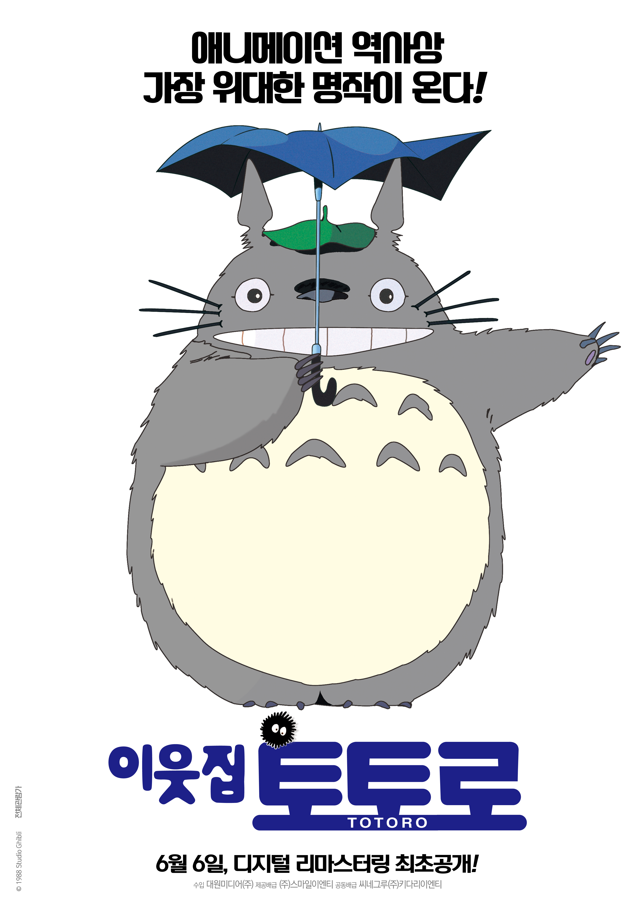

애니메이션 역사상 가장 위대한 명작이 온다!
이웃집 토토로(My Neighbor Totoro, 1988)
애니메이션, 가족 | 2001.07.28. 개봉 | 2019.06.06 재개봉 | 87분 | 일본 | 전체관람가
감독 미야자키 하야오
출연 히다카 노리코, 사카모토 치카, 타카기 히토시
내용 숲속에 살고 있는 특별한 친구를 만났다!
도시를 떠나 시골로 이사 온 ‘사츠키’와 ‘메이’는 우연히 숲속에 살고 있는 신비로운 생명체 ‘토토로’를 만나 신비한 모험을 함께 한다.
그러던 어느 날, 어머니의 병원에서 위태로운 소식이 도착하고 언니 ‘사츠키’가 정신없이 아빠에게 연락을 취하는 와중에 ‘메이’가 행방불명 되는데…

스튜디오 지브리를 대표하는 캐릭터이자 애니메이션 역사상 최고의 명작 중 하나로 꼽히는 ‘이웃집 토토로’가 6월 6일 디지털 리마스터링 국내 개봉을 확정했다.
1988년 일본에서 개봉한 ‘이웃집 토토로’는 일본 애니메이션의 거장 미야자키 하야오 감독의 대표작이자 스튜디오 지브리를 대표하는 작품으로 2001년 국내에서도 개봉하며 수많은 팬의 인생 애니메이션으로 손꼽히고 있다.
6월 6일 개봉을 앞둔 ‘이웃집 토토로’는 국내 개봉 18년 만에 선보이는 디지털 리마스터링 버전으로 화면과 사운드의 질을 높인 것은 물론 최초로 우리말 더빙까지 진행해 새롭게 달라진 ‘이웃집 토토로’를 만나볼 수 있을 예정이다. 여기에 사랑스러운 캐릭터들과 감동을 배가시키는 영화 음악의 거장 히사이시 조의 명품 OST는 다시 한번 관객들의 마음을 사로잡을 것이다.
줄거리
아빠와 사츠키, 메이는 작은 시골마을로 이사를 했다.
낡은 집 다락방에서 검댕이 도깨비(마쿠로 쿠로스케)를 보기도 하고 집을 하나 둘 청소하며 메이와 사츠키는 즐겁기만 하다.
그러던 어느날, 메이는 집앞 마당에서 신기한 동물을 발견하고 뒤를 쫓았고,
커다란 나무 구멍속으로 빨려들어간 메이는 거대한 동물의 배 위에 떨어져 그곳에서 토토로를 만나게 된다.
몸이 아파 병원에 입원중인 엄마를 보러 간 아빠에게 우산을 건네주려 정류장에서 기다리던 메이와 사츠키는
토토로와 만나게 되고,
앞마당에 심은 씨앗 앞에서 함께 춤을 추고 하늘을 날아다니는 등 특별한 추억을 쌓는다.
그러던 중 엄마가 퇴원을 앞두고 증세가 심각해져 퇴원이 미뤄졌다는 연락을 받는다.
상처받은 메이는 엄마에게 기운을 복돋아 주려고 엄마를 찾아 나섰다가 길을 잃는다.
동생이 사라져 놀란 사츠키는 토토로에게 도움을 요청했고, 신기한 고양이 버스를 타고 메이를 찾는다.
둘은 엄마를 찾아 병원으로 향하고 엄마 병실의 창가에 작은 선물을 놓은 뒤 돌아온다.